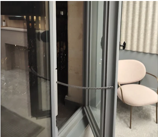
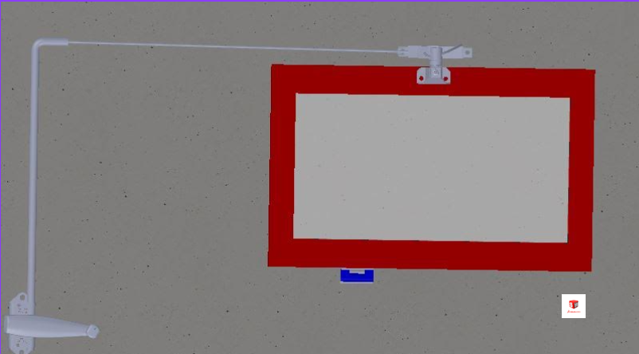

Futur ingénieur · Concepteur · Bâtisseur
Passionné par la conception mécanique, la modélisation 3D et la résolution de problèmes concrets. Je construis des solutions qui tiennent — au sens propre comme au figuré.
PRJ — 001
Conception et fabrication complète d'un robot marcheur intégrant le mécanisme de Jansen, de la modélisation 3D au prototype fonctionnel, en passant par le dimensionnement des liaisons.
PRJ — 002
Reconception d'une brouette électrique en intégrant une démarche d'éco-conception : choix de matériaux et solutions plus durables, analyse du cycle de vie du produit.
2024 — EN COURS
IUT d'Évry Val d'Essonne
Formation en conception mécanique, fabrication, automatisme et management de projet. Apprentissage des logiciels de CAO, simulation par éléments finis et méthodes de production industrielle.
10 SEMAINES — 2025
Comtra France
Participation à la conception de pièces mécaniques sous logiciel CAO, création de plans de fabrication et suivi de production. Collaboration avec les équipes méthodes et qualité.
2023 — 2024
IUT de Troyes
Première année réalisée à Troyes : découverte de la CAO, de la soudure, de l'automatisme et de la métrologie à travers quatre SAÉ — analyse de produit, motorisation de portail, système de réglage sur suremballeuse et étude du tissu industriel local.
2020 — 2023
Lycée — Évry
Premier contact avec les sciences de l'ingénieur et orientation progressive vers la mécanique et la conception.
2023 — 2024
Détail des 4 SAÉ du premier semestre : analyse produit, motorisation de portail, réglage automatisé sur suremballeuse et visite d'entreprise.
2024 — EN COURS
Robot marcheur, reconception écoresponsable d'une brouette électrique et stage en bureau d'études chez Comtra France — détails à venir.
Après avoir obtenu mon bac général, j'ai choisi de m'orienter vers le BUT Génie Mécanique et Productique car je souhaitais me former dans un domaine concret, technique et tourné vers l'innovation. J'ai toujours été attiré par la conception, la fabrication et le fonctionnement des systèmes mécaniques, et cette formation me permet d'explorer toutes les étapes, de l'usinage à la modélisation 3D, en passant par la programmation.
Commencer par des travaux pratiques et des tâches manuelles ne me pose aucun problème, bien au contraire. Cela me permet de mieux comprendre les réalités du terrain, d'acquérir des bases solides et de développer une rigueur essentielle pour la suite. À terme, j'aimerais évoluer vers un poste en bureau des méthodes ou en bureau d'étude, avec l'ambition de progresser au sein d'une entreprise qui a un impact sur le monde de demain. La robotique est aussi un domaine auquel j'ai pris un certain attrait, et qui me passionne de plus en plus.
Je suis une personne curieuse, minutieuse et j'apprécie le travail en équipe. J'accorde beaucoup d'importance à l'entraide et à la précision dans ce que j'entreprends.
En dehors des études, je m'intéresse à des domaines très variés qui me permettent de garder un équilibre. Je suis passionné par l'aquariophilie, un univers qui demande patience et sens du détail. J'aime lire, que ce soit des romans, des mangas, des ouvrages sur des sujets techniques ou culturels. Je suis également amateur de football, de jeux vidéo, et je prends plaisir à faire des randonnées. Enfin, je suis un passionné de football, que ce soit pour le pratiquer ou le regarder — je le pratique au Red Star FC, où j'évolue actuellement avec l'équipe réserve. C'est l'une de mes passions les plus importantes, elle a une place très importante pour moi.

RENDU IRL — SYSTÈME MISTRAL EN INSTALLATION
MODÉLISATION 3D — SOLIDWORKS · COMTRA FRANCEStagiaire assistant ingénieur — Bureau d'études
COMTRA France est une entreprise fondée en 1966, spécialisée dans le désenfumage et la sécurité incendie. Elle conçoit des systèmes d'ouverture de fenêtres permettant l'évacuation des fumées et gaz chauds en cas d'incendie. Mon stage s'est déroulé dans un contexte mêlant conception 3D, impression 3D, prototypage et observation terrain.
Modéliser en 3D le système d'ouverture de fenêtre de désenfumage Ferme-imposte Mistral, en proposer une simulation de fonctionnement et produire des supports visuels d'aide à l'assemblage. Le travail a abouti sur un ensemble d'environ 25 pièces, organisé en 5 sous-ensembles, accompagné de 3 vues éclatées exploitables par l'entreprise.
Modélisation de pièces mécaniques sous SolidWorks à partir de plans réels — lecture de plans de définition, création d'esquisses, extrusions, révolutions, taraudages. Réalisation de sous-assemblages, vues éclatées et animations 3D. Préparation de fichiers pour impression 3D (Simplify3D / Volumic), étalonnage machine et maintenance de premier niveau. Accompagnement terrain lors d'interventions de maintenance et tests de désenfumage réels.
Modélisation complète du système Mistral (~25 pièces / 5 sous-ensembles), simulation cinématique sous SolidWorks, production de 3 vues éclatées d'assemblage, prototypage physique de pièces en PLA sur imprimante 3D Volumic, observation et analyse de systèmes réels sur site. Confrontation du modèle numérique aux contraintes d'installation, d'esthétique et de maintenance.
Maîtrise progressive de SolidWorks (pièces, assemblages, simulation, mise en plan), découverte de l'impression 3D et du prototypage industriel, compréhension des liaisons mécaniques et de la cinématique, lien entre conception numérique et réalité industrielle.
Le football occupe une place essentielle dans ma vie depuis ma plus tendre enfance, que ce soit pour le pratiquer ou le suivre à la télévision.
J'évolue actuellement avec l'équipe réserve du Red Star FC, un club historique au parcours riche. Ce sport m'apprend la rigueur, l'esprit d'équipe et la persévérance — des valeurs que je retrouve aussi dans mes études en génie mécanique.
L'aquariophilie est un univers qui demande patience, observation et sens du détail — des qualités que je m'efforce de cultiver au quotidien.
Suivre l'évolution d'un écosystème, ajuster les paramètres de l'eau, choisir les espèces qui cohabitent bien ensemble : c'est une forme de précision qui rejoint ma façon d'aborder mes projets techniques, où chaque détail compte.
Ouvert aux stages, alternances et projets intéressants. N'hésite pas à m'écrire.